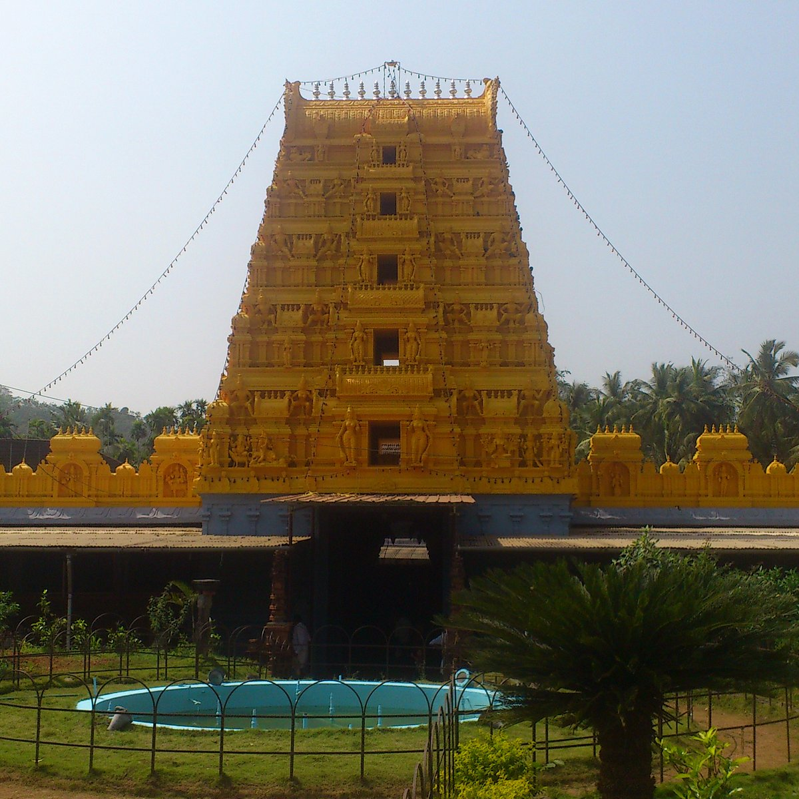
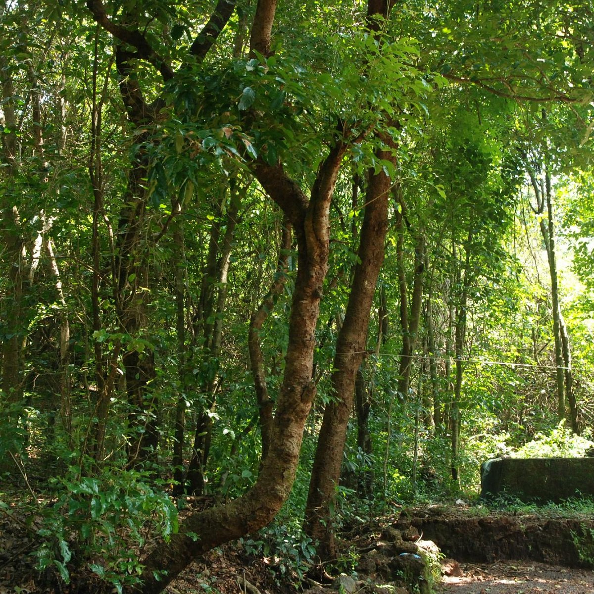

Malla Temple

According to Kerala's popular legend, Goddess Durga killed the demon Daruka.
Elsewhere in India it is Mahisasura whom she killed. Goddess Durga Parameshwari finished the two dangerous demons known as Chanda and Munda.
She is the incarnation of Shakti on earth.
Kareem Forest

Forest Park, officially opened to the public on June 24, 1876, is one of the largest urban parks in the United States.
At around 1,300 acres it is bigger than Central Park in New York. Today Forest Park attracts more than 12 million visitors a year.
It is a man-made forest.It is founded and maintained by environmentalist Kareem.It is a great place for nature lovers.
Ranipuram
Ranipuram is a hill station in the Indian state of Kerala.
Situated in the Vellarikundu taluk, Kasargod District, Ranipuram is 750 meters above sea level and 45 km from Kanhangad.
It is known as "Ooty of Kerala.